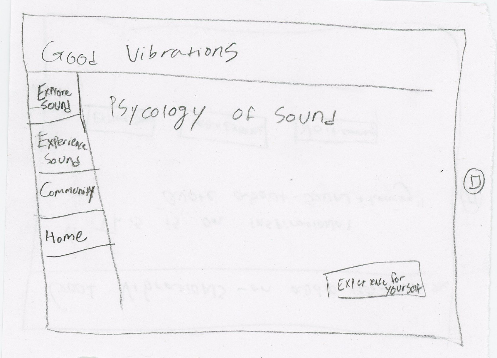

Below you will find the images that are my paper prototypes from the first round of sharing.
This is the splash page, it is the first thing that users will see when they navigate to my website.This is the second page of my website that users would be sent to once they hit enter from the splash page. Some of the feedback I recieved from this page of my prototype was if the link was clickable or not.This is the informational page. This portion of the website is meant to educate. The button "See How You Feel" was added in the second iterations of the paper prototype, it was not there in this first round. Some of the feedback I recieved
from this page of my prototype was what happens when you click on the ear, or is it even clickable.This is the first page of the interactive experience. It will provide users with a description about what they are about to experience.This is the one of the interactive activities. This was based of of my Studio 4. It allows users to change the size of the circle based on the volume of sound they they create and the computer's microphone hears.
Other Feedback From Round 1
What does the community link in the Nav do?
The Home Page should look differnt then the internal experience pages of the website.
Can you make the iPad vibrate?
Round 2
Below you will find the images that are my paper prototypes from the second round of sharing, along with the improvements that I made.
This is the same splash page from the first round. I didn't change anything on this page.Based on the feedback from Round 1, I chose to change my homepage. I am still considering if the quote is clickable and what happens if it is clicked. I have added the navigation buttons that send you to the differnt pages that users can experience.This is the page that the users would navigate to if they wanted to "Explore Sound". I plan to add more buttons that send the user to the differnt educational sections of the webpage.This is the same as my origional informational page. The addition I made to this page was having the links to the other information pages at the end of the information for that page.

This is an additional informational page that users are sent to based on the buttons they click.This is the same experience description page that sends users into the experience.This is the one of the interactive activities, the same one from the first round.
Other Feedback From Round 2
It is important to pay attention to the amount of clicks that a user will have to make in order to navigate to a particular webpage.
To deal with this amount of feedback I may want to eliminate the Splash Page.